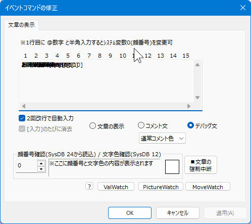
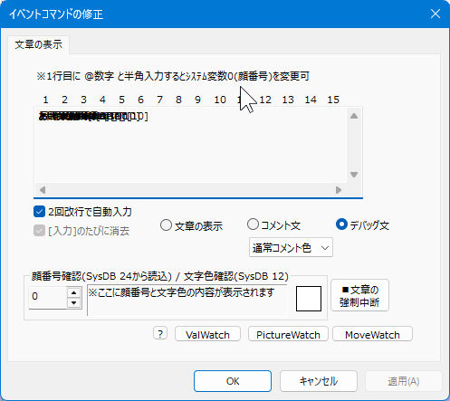

■2025-10-18 (土) シル学移行中！＋Windows更新で起きたウディタ文字化けの修正！▼
平穏な時間に戻って終活（サイトがなくなっても各コンテンツを遊べるようにする作業）作業の続きをやっております！
具体的には『シルフェイド学院物語』のDLsite展開に向けてのリファイン作業でウディタVer3に移行しようとして苦戦しているところから！
と、まさかのWindowsアップデートによってウディタが文字化けしまくってて「ギャアアア」と言っていた話です！

具体的にどんな問題が起きたかというと、
「そもそもシナリオデータを全部認識しなくなってる！」
「シナリオは読めるようになったけどデータが正常に読み込まれなくてキャラクターがいないことになってる！」
「そのままゲームを始めてみたけど文字化けしてる！！」
「ゲーム内の画面も正常に出ないんですけど！」
などといったすごい面倒くさそうな状況と格闘中です！！
ウディタ3に合わせたチューンをしないと動かなさそうなところがいっぱい！ せっかくなのでこの機会に色々微調整も含め、修正を続けていこうと思います！
ちなみになぜこんなことが起きるかというと、まず第一にシル学はウディタのVer2で作られていて、内部では「Shift JIS（以後SJIS）」という文字コードをベースに動いてたのですが、ウディタのVer3では内部の文字コードが全部「UTF-8」というコードに変更されているんですね！
「UTF-8」はユニコードと呼ばれている文字コードで世界中で動作させやすく、おかげでウディタが海外環境でもプレイしやすくなったのですが、その文字コードの違いのせいで正常に動作しないシル学専用処理が続出！
ちなみに、皆さまのウディタの処理の範囲では、『Ver2のデータをVer3のGame.exeで動かしても内部で自動的にSJIS文字コードがUTF-8に変換される』という仕組みが搭載されているので、問題なく昔のゲームもそのまま動きます！ ご安心を！
が！ 私専用で使ってる処理にはそういう両対応処理がまだ入ってなくて、処理が全部動かなくなっちゃった、というわけですね！
どこを直せば動くのかさえ全然思いつかない課題はもはやいつものことですが、おかげさまで、今はそういう状況でも腐らずに前進していけるくらいには成長できています！
この機会に直せるところはしっかり直して公開できるよう、がんばります！
ちなみにこのほかにも、いくつかのゲーム内処理や、いくつかの立ち絵なども調整していく予定です！
Windows11の「KB5065789」の更新によって、なんとウディタのコマンド修正時に文字が以下のようにグチャグチャになってしまう症状が発生するようになりました！！ グギャアアア！！！

コマンドの「編集」をして出てきた画面で何か文字入力すると↑のようになってしまうのですが、全く想定外だったので「もうーWindowsさーん！！！」ってなってしまいました。
ひとまずVer3.653以降のバージョンではなんとか直せたと思いますので、お困りの方はぜひ最新版をお試しください！
もちろんウディタの他の問題も色々修正を続けています！ ここに来て難しい問題ばかり判明してオギャアアア！ と叫んでおります。
できればウディタプロ版の売上数的に1週間あたり1日くらいの作業量で対応したいんですが、なかなかまだそこまでいきませんね！ なんとか時給500円相当は欲しいよー！！
早くバグを落ち着かせて、自分の作業に集中したいです。秋が来て心理的に冷えてるのかサポートのモチベーションも少ししんどくなってきました。3.50β公開の1月から800点くらい直してるのでさすがに息切れしてきたのかもしれません。
という感じで、日々やれることを進めていっております！
急ぎの用事はなくなりましたし、新しいポケモン（Z-A）も出たので休憩時間にはちょいちょいそれも遊ばせていただきながら作業を進めていこうと思います！
それと、ご支援ページやウディタプロ版のBOOSTやチップなど、いつもみなさまからのご支援、本当にありがとうございます！
生活がだんだん大変になってきているのですごく助けられています！
ゲームや各種電子書籍コンテンツなどは後から値上げしにくいので、本格的なインフレが来るとすごく辛いですね。
これから政治的にもインフレが継続されそうな気配なので、その辺も加味しながら今後の計画を練っていく必要がありそうです。
何はともあれ、可能な範囲で引き続き全力を尽くして進めていきます！ がんばるぞ！
具体的には『シルフェイド学院物語』のDLsite展開に向けてのリファイン作業でウディタVer3に移行しようとして苦戦しているところから！
と、まさかのWindowsアップデートによってウディタが文字化けしまくってて「ギャアアア」と言っていた話です！
◆シルフェイド学院物語、リファイン作業開始！
【ウディタがVer3になってて全然動かない絶望！】
ということで私の過去の有料ゲーム『シルフェイド学院物語』のリファイン作業が始まりましたが、ウディタがVer3になったことで全部動かなくなってました！！ ギャアアア！！！具体的にどんな問題が起きたかというと、
「そもそもシナリオデータを全部認識しなくなってる！」
「シナリオは読めるようになったけどデータが正常に読み込まれなくてキャラクターがいないことになってる！」
「そのままゲームを始めてみたけど文字化けしてる！！」
「ゲーム内の画面も正常に出ないんですけど！」
などといったすごい面倒くさそうな状況と格闘中です！！
ウディタ3に合わせたチューンをしないと動かなさそうなところがいっぱい！ せっかくなのでこの機会に色々微調整も含め、修正を続けていこうと思います！
ちなみになぜこんなことが起きるかというと、まず第一にシル学はウディタのVer2で作られていて、内部では「Shift JIS（以後SJIS）」という文字コードをベースに動いてたのですが、ウディタのVer3では内部の文字コードが全部「UTF-8」というコードに変更されているんですね！
「UTF-8」はユニコードと呼ばれている文字コードで世界中で動作させやすく、おかげでウディタが海外環境でもプレイしやすくなったのですが、その文字コードの違いのせいで正常に動作しないシル学専用処理が続出！
ちなみに、皆さまのウディタの処理の範囲では、『Ver2のデータをVer3のGame.exeで動かしても内部で自動的にSJIS文字コードがUTF-8に変換される』という仕組みが搭載されているので、問題なく昔のゲームもそのまま動きます！ ご安心を！
が！ 私専用で使ってる処理にはそういう両対応処理がまだ入ってなくて、処理が全部動かなくなっちゃった、というわけですね！
どこを直せば動くのかさえ全然思いつかない課題はもはやいつものことですが、おかげさまで、今はそういう状況でも腐らずに前進していけるくらいには成長できています！
この機会に直せるところはしっかり直して公開できるよう、がんばります！
ちなみにこのほかにも、いくつかのゲーム内処理や、いくつかの立ち絵なども調整していく予定です！
◆ウディタ、まさかのWindowsアップデートで文字化け！
【「KB5065789」アップデート以降、コマンドの「編集」時に文字化けする症状が発生！】
そしてこちらでも文字化けの話です！Windows11の「KB5065789」の更新によって、なんとウディタのコマンド修正時に文字が以下のようにグチャグチャになってしまう症状が発生するようになりました！！ グギャアアア！！！

コマンドの「編集」をして出てきた画面で何か文字入力すると↑のようになってしまうのですが、全く想定外だったので「もうーWindowsさーん！！！」ってなってしまいました。
ひとまずVer3.653以降のバージョンではなんとか直せたと思いますので、お困りの方はぜひ最新版をお試しください！
もちろんウディタの他の問題も色々修正を続けています！ ここに来て難しい問題ばかり判明してオギャアアア！ と叫んでおります。
できればウディタプロ版の売上数的に1週間あたり1日くらいの作業量で対応したいんですが、なかなかまだそこまでいきませんね！ なんとか時給500円相当は欲しいよー！！
早くバグを落ち着かせて、自分の作業に集中したいです。秋が来て心理的に冷えてるのかサポートのモチベーションも少ししんどくなってきました。3.50β公開の1月から800点くらい直してるのでさすがに息切れしてきたのかもしれません。
という感じで、日々やれることを進めていっております！
急ぎの用事はなくなりましたし、新しいポケモン（Z-A）も出たので休憩時間にはちょいちょいそれも遊ばせていただきながら作業を進めていこうと思います！
それと、ご支援ページやウディタプロ版のBOOSTやチップなど、いつもみなさまからのご支援、本当にありがとうございます！
生活がだんだん大変になってきているのですごく助けられています！
ゲームや各種電子書籍コンテンツなどは後から値上げしにくいので、本格的なインフレが来るとすごく辛いですね。
これから政治的にもインフレが継続されそうな気配なので、その辺も加味しながら今後の計画を練っていく必要がありそうです。
何はともあれ、可能な範囲で引き続き全力を尽くして進めていきます！ がんばるぞ！